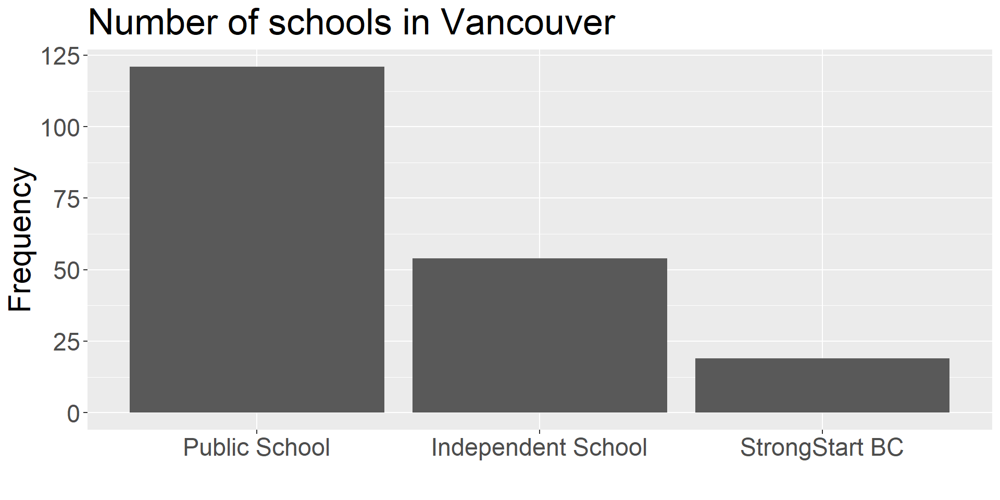
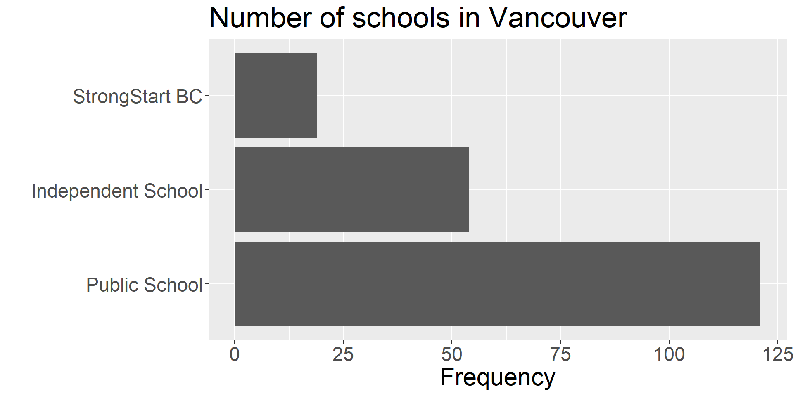
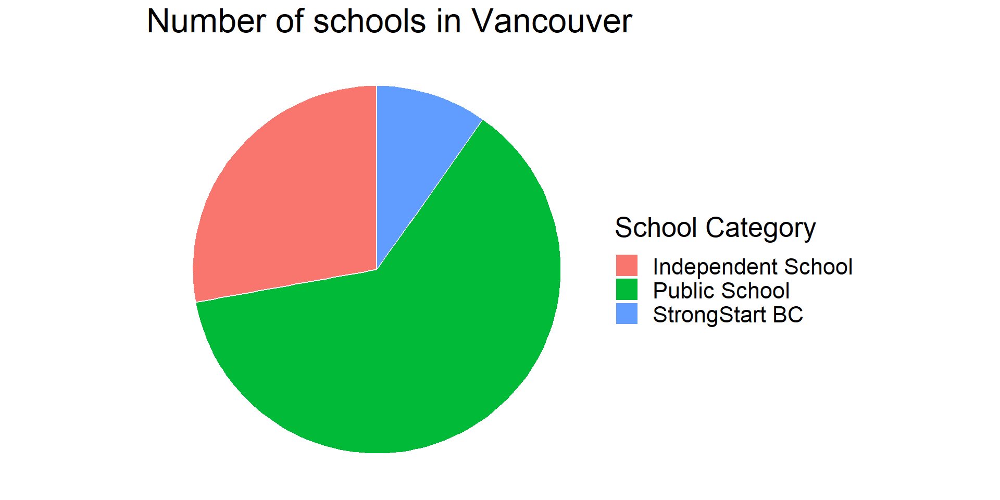

Exploratory Data Analysis:
Categorical Data
STAT 200 - Lecture 2
Exploratory Data Analysis (EDA)
One of the most critical steps when studying a new problem and data set.
EDA helps us to:
- better understand the data;
- find new and frequently unexpected relationships between variables;
- raise interesting questions about the study;
Disclaimer
- You are in the driver’s seat of your EDA.
- There’s no recipe;
- Little thought yields small findings
- In general, EDA findings are preliminary that require more investigation.
Categorical Variables
Data
- For this section, let’s consider the dataset of schools in Vancouver.
- which of the variables above in this data is categorical?
Frequency Tables
| School Category | n |
|---|---|
| Independent School | 54 |
| Public School | 121 |
| StrongStart BC | 19 |
Bar Chart


Pie Chart (Avoid!)

Pie Chart (Avoid!)

Avoid using pie charts;
When you have many slices and/or the slices are roughly the same size, it becomes impossible to read.
In general, Bar Charts are much easier to read than Pie Charts – so stick with them.
Two categorical Variables
Contigency tables
Appropriate for summarizing the counts of two categorical variables;
Facilitates the analysis of the relationship between two categorical variables;
Case Study: Aspirin and Heart Attack
- A controlled, randomized, double-blind study on the effects of aspirin was conducted in the 80s.
| Drug | Heart Attack | No Heart Attack | Total |
|---|---|---|---|
| Aspirin | 104 | 10,933 | 11,037 |
| Placebo | 189 | 10,845 | 11,034 |
| Total | 293 | 21,778 | 22,071 |
The study was reported on the front page of the New York Times on January 27, 1988. (See the article here.)
A few questions of interest
- What proportion of individuals did not have a heart attack?
- What proportion of individuals received a placebo?
- What proportion of individuals had a heart attack were on aspirin?
- What proportion of individuals who were on aspirin had a heart attack?
- What proportion of individuals who were on placebo and had a heart attack?
Marginal Distribution
- What is the proportion of individuals who did not have a heart attack?
| Drug | Heart Attack | No Heart Attack | Total |
|---|---|---|---|
| Aspirin | 104 | 10,933 | 11,037 |
| Placebo | 189 | 10,845 | 11,034 |
| Total | 293 | 21,778 | 22,071 |
| Heart Attack | No Heart Attack |
|---|---|
| 293 (1.33%) | 21,778 (98.67%) |
Answer: 98.67%
Marginal Distribution
- What proportion of individuals received placebo?
| Drug | Heart Attack | No Heart Attack | Total |
|---|---|---|---|
| Aspirin | 104 | 10,933 | 11,037 |
| Placebo | 189 | 10,845 | 11,034 |
| Total | 293 | 21,778 | 22,071 |
| Aspirin | Placebo |
|---|---|
| 11,037 (50%) | 11,034 (50%) |
Answer: 50%
Conditional Distribution
- What proportion of individuals who had a heart attack were on aspirin?
| Drug | Heart Attack | No Heart Attack | Total |
|---|---|---|---|
| Aspirin | 104 | 10,933 | 11,037 |
| Placebo | 189 | 10,845 | 11,034 |
| Total | 293 | 21,778 | 22,071 |
| Aspirin | Placebo |
|---|---|
| 104 (35.49%) | 189 (64.51%) |
Answer: 35.49%
Note that we fix the condition of occurrence of heart attack and look at the distribution of drug type.
Conditional Distribution
- What proportion of individuals who were on aspirin had a heart attack?
| Drug | Heart Attack | No Heart Attack | Total |
|---|---|---|---|
| Aspirin | 104 | 10,933 | 11,037 |
| Placebo | 189 | 10,845 | 11,034 |
| Total | 293 | 21,778 | 22,071 |
| heart attack | no heart attack |
|---|---|
| 104 (0.94%) | 10,933 (99.06%) |
Answer: 0.94%
Note that we fix the condition of drug type and look at the distribution of occurrence of heart attack.
Intersection
- What proportion of individuals who were on placebo and had a heart attack?
| Drug | Heart Attack | No Heart Attack | Total |
|---|---|---|---|
| Aspirin | 104 | 10,933 | 11,037 |
| Placebo | 189 | 10,845 | 11,034 |
| Total | 293 | 21,778 | 22,071 |
Answer: \(\frac{189}{22071} = 0.86\%\)
Association
- We can use the contingency table to explore the relationship between the variables.
- What would you expect to see if there was no association between having a heart attack and the drug taken?
- What would you expect to see if there was no association between having a heart attack and the drug taken?
- roughly the same proportion of
heart attacksin theplaceboandaspiringroups;
- roughly the same proportion of
- What would you expect to see if there was no association between having a heart attack and the drug taken?
- the proportion in the marginal distribution should match the one in the conditional distribution;
Association
| Drug Type | Heart Attack | No Heart Attack | Total |
|---|---|---|---|
| Aspirin | 104 | 10,933 | 11,037 |
| Placebo | 189 | 10,845 | 11,034 |
| Total | 293 | 21,778 | 22,071 |
- Proportion of people who had a heart attack:
- Proportion of people on
aspirinwho had a heart attack: - Proportion of people on
placebowho had a heart attack:
- Proportion of people who had a heart attack: \(\frac{293}{22071}=\) 1.33%
- Proportion of people on
aspirinwho had a heart attack: \(\frac{104}{11037}=\) 0.94% - Proportion of people on
placebowho had a heart attack: \(\frac{189}{11034}=\) 1.71%
Activity
Consider two over-the-counter topical ointment brands (Brand A and Brand B) for treating eczema. Eczema patients who have used either brand were asked about the effectiveness of the ointments (whether or not the eczema is cured within two weeks). The results are summarized in the table below:
| Eczema | |||
|---|---|---|---|
| Ointment Brand | Cured | Not Cured | Total |
| Brand A | 100 (40%) | 150 (60%) | 250 (100%) |
| Brand B | 200 (50%) | 200 (50%) | 400 (100%) |
| Total | 300 (46%) | 350 (54%) | 650 (100%) |
viewof count = {
let input = Inputs.range([0, 400],
{value: 200,
step: 1,
label: "# patients cured after using Brand B"});
d3.select(input).select('input[type="number"]').style("display", "none");
d3.select(input).style("font-size", "0.55em").style('width', '100%');
d3.select(input).select("label").style('width', '35%');
//d3.select("#test").style("width", '35%');
return input;
}
update_entry = (view) => {
let cell_independent = document.querySelector('#independent-cell');
let cell_dependent = document.querySelector('#dependent-cell');
let cell_total_independent = document.querySelector('#total-column-independent');
let cell_total_dependent = document.querySelector('#total-column-dependent');
cell_independent.textContent = `${view} (${(100 * view / 400).toFixed(1)}%)`;
cell_dependent.textContent = `${400 - view} (${(100*(400 - view)/400).toFixed(1)}%)`;
cell_total_independent.textContent = `${100 + view} (${(100*(100 + view)/650).toFixed(1)}%)`;
cell_total_dependent.textContent = `${150 + (400 - view)} (${(100*(150 + (400 - view))/650).toFixed(1)}%)`;
}Eczema among people who used Brand A ointment
data = [
{"X": "Brand A", "Eczema": "Cured", "Frequency": 100, "Proportion": 100 / (100 + 150)},
{"X": "Brand A", "Eczema": "Not cured", "Frequency": 150, "Proportion": 150 / (100 + 150)},
{"X": "Brand B", "Eczema": "Cured", "Frequency": count, "Proportion": count / 400},
{"X": "Brand B", "Eczema": "Not cured", "Frequency": 200, "Proportion": (400 - count) / 400}]
barPlot = Plot.plot({
x: {
//axis: null,
domain: data.Y,
//range: [150, 300]
},
y: {
grid: true,
domain: [0, 1]
},
marks: [
Plot.barY(data.filter(d => d.X == 'Brand A'), {x: "Eczema", y: "Proportion", fill: "X", title: "X"}),
Plot.ruleY([0])
],
style: {
fontSize: '.45em',
},
height: 290,
width: 478,
marginLeft: 50,
marginRight: 50,
marginTop: 50,
marginBottom: 50,
});Eczema among people who used Brand B ointment
Plot.plot({
x: {
domain: data.Y,
},
y: {
grid: true,
domain: [0, 1]
},
marks: [
Plot.barY(data.filter(d => d.X == 'Brand B'), {x: "Eczema", y: "Proportion", fill: "X", title: "X"}),
Plot.ruleY([0])
],
style: {
fontSize: '.45em',
},
height: 290,
width: 478,
marginLeft: 50,
marginRight: 50,
marginTop: 50,
marginBottom: 50,
});Case study
Race and Death Penalty in Florida
Does race affect the chance of receiving a death penalty sentence in Florida?
Radelet (1981) examined data on homicide indictments in 20 Florida counties between 1976 and 1977.
| Death Penalty | |||
|---|---|---|---|
| Race | Yes | No | Total |
| White | 19 | 141 | 160 |
| Black | 17 | 149 | 166 |
| Total | 36 | 290 | 326 |
Case Study: Questions of interest
- Question 1: What proportion of indictments resulted in a death sentence?
- Question 2: Among those who were sentenced to death, what is the proportion of white defendants?
- Question 3: Compare the proportion of white defendants sentenced to death against that of black defendants.
Case Study: Diving Deeper
Death Penalty sentences grouped per victims’ races
| Death Penalty | |||
|---|---|---|---|
| Race | Yes | No | Total |
| White | 19 | 132 | 151 |
| Black | 11 | 52 | 63 |
| Total | 30 | 184 | 214 |
| Death Penalty | |||
|---|---|---|---|
| Race | Yes | No | Total |
| White | 0 | 9 | 9 |
| Black | 6 | 97 | 103 |
| Total | 6 | 106 | 112 |
Case Study: Questions of interest
- Question 4: Compare the proportions of indictments that resulted in a death sentence for black and white victims.
- Question 5: For black victims, compare the proportion of white defendants who were sentenced to death against black defendants.
- Question 6: For white victims, compare the proportion of white defendants who were sentenced to death against black defendants.
Simpson’s Paradox
- Question 7: Compare your results in Questions 6 and 7 with the result you obtained in Question 3. Is it surprising?
- This reversal in the direction of association when accounting for a third variable is called Simpson’s Paradox;
References
© 2023 Rodolfo Lourenzutti & Eugenia Yu – Material Licensed under CC By-SA 4.0